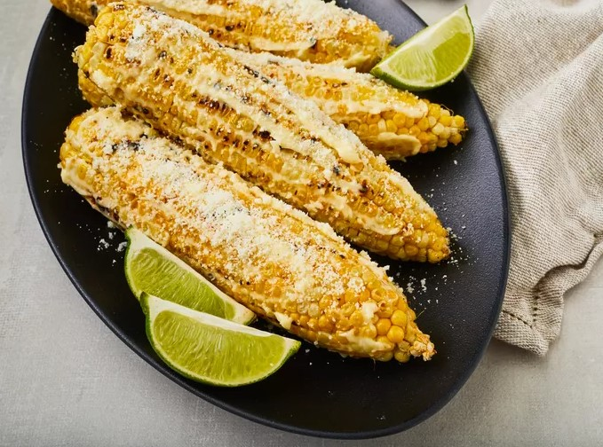

This Mexican corn on the cob recipe (a.k.a. elote) will please even the
pickiest of eaters. And this recipes uses only five ingredients, so it's
as easy to make as it is to enjoy.
What is Elote?
Elote, or Mexican corn on the cob, is a popular street food in Mexico
(that's why it's also known as Mexican street corn). Corn on the cob is
charred on the grill, slathered with butter and mayonnaise, and finished
with salty Cotija cheese.
Ingredients
-
Corn: This elote recipe makes four servings, so you'll need four
shucked corn cobs.
-
Butter and mayonnaise: The grilled corn is rolled in melted butter and
mayonnaise, resulting in a rich and flavorful finished product.
-
Cheese: You can find Cotija, a salty and crumbly cheese, in most
grocery stores.
-
Lime: A lime wedge (for serving) is optional, but it adds a bright pop
of flavor.
Tip:
For a bit of color and heat, lightly dust the elote with chili powder,
tajin seasoning, or cayenne pepper before serving. Fresh cilantro is also
a tasty addition.
Steps
- Gather all ingredients.
- Preheat an outdoor grill for medium-high heat.
-
Grill corn on the preheated grill until hot and lightly charred all
over, 7 to 10 minutes.
-
Roll corn in melted butter, then spread evenly with mayonnaise.
Sprinkle with cotija cheese.
- Serve with lime wedges.